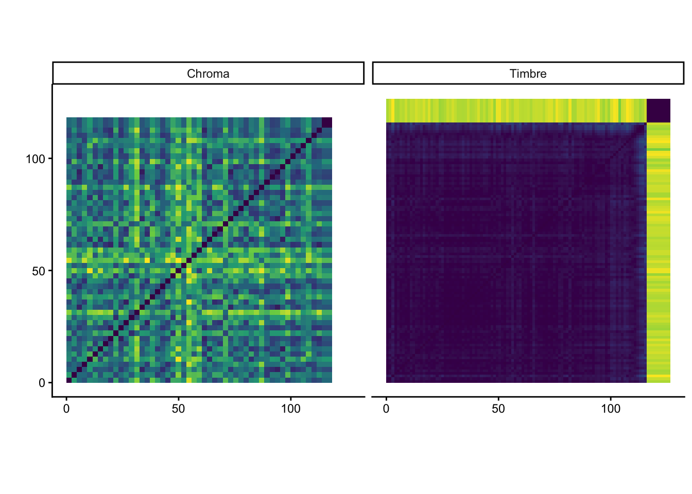
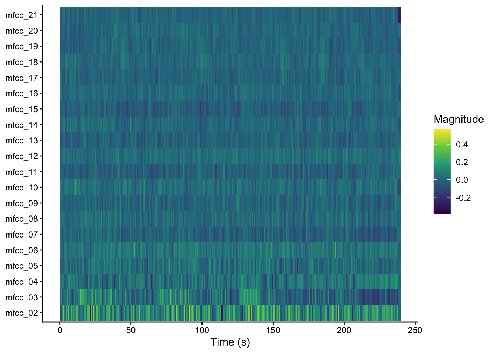
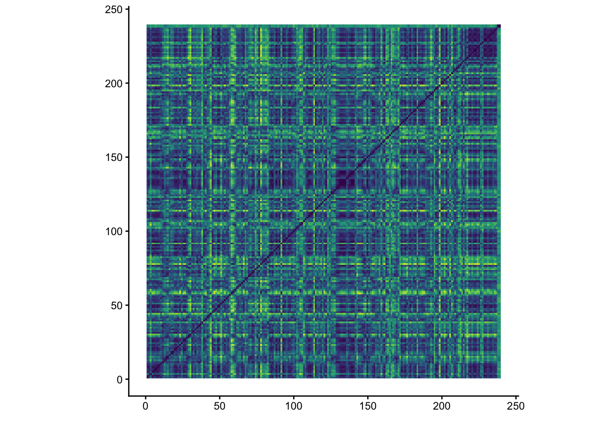

remotes::install_github('jaburgoyne/compmus')Week 9 · Structure Analysis · Self-Similarity Matrices
You can download the raw source code for these lecture notes here.
Course Meeting Plan
Wednesday · 26 February · Lecture
- Demo: The Eternal Jukebox (15 min)
- Portfolio critiques (15 min)
- Lecture: Self-similarity matrices (15 min)
- Lecture: MFCCs and Spotify’s timbre feature (20 min)
- Breakout: Avril 14 (15 min)
- Discussion: Breakout findings (10 min)
Wednesday · 26 February · Lab
- Demo: Introduction to new compmus functions (15 mins)
- Breakout: Interpreting timbre features (or not) (20 mins)
- Discussion: Breakout findings (10 mins)
- Demo: Self-similarity matrices with compmus (10 mins)
- Breakout: Self-similarity matrices (20 mins)
- Jam session: Breakout findings (15 mins)
Software setup
Visit the Canvas modules for this week to get RStudio connected to Github.
In order to get the timbre functions working you will also want to reinstall compmus from GitHub, using the following code:
Quit and restart RStudio after you reinstall compmus, to be sure to start fresh.
Breakout 1: Avril 14
Below, you can see two self-similarity matrices for Aphex Twin’s ‘Avril 14th’. Listen to the piece together and try to explain the patterns you see in the matrices. You can download the relevant CSV files here: - pitches - timbre
You can download a CSV file for this analysis here; once we start making portfolios next week, we’ll use code like the following example.
Warning: Using `by = character()` to perform a cross join was deprecated in dplyr 1.1.0.
ℹ Please use `cross_join()` instead.
ℹ The deprecated feature was likely used in the compmus package.
Please report the issue to the authors.
Breakout 2: Cepstrograms
library(tidyverse)
library(compmus)Last week, we used several custom functions from to work with the Spotify API:
get_tidy_audio_analysisto load audio analyses from Spotify, one track at a timecompmus_normaliseto normalise audio features using common techniques, including:manhattaneuclideanchebyshev
compmus_long_distanceto compare to series of audio features against each other using common distance metrics, including:manhattanaitchisoneuclideancosineangular
Common Norm, Distance, and Summary Combinations
| Domain | Normalisation | Distance |
|---|---|---|
| Non-negative (e.g., chroma) | Manhattan | Manhattan |
| Aitchison | ||
| Euclidean | cosine | |
| angular | ||
| Chebyshev | [none] | |
| Full-range (e.g., timbre) | [none] | Euclidean |
| Euclidean | cosine | |
| angular |
‘Bloed, Zweet en Tranen’
To make a cepstrogram, we will use a similar procedure to last week. In Sonic Visualiser, use Then go to the Transform menu and select Analysis by Category / Low Level Features / Mel Frequency Cepstral Coefficients [libextract] and export it as before. (There are other MFCC options, but they will not work with the template code for this course.) Then we use a new compmus function compmus_wrangle_timbre() instead of compmus_wrangle_pitches().
Here is an example from André Hazes’s ‘Bloed, Zweet en Tranen’. TYou can download the relevant CSV file for this analysis here: - pitches - timbre
bzt <- read_csv("../dat/bzt-timbre.csv")Rows: 10324 Columns: 22
── Column specification ────────────────────────────────────────────────────────
Delimiter: ","
dbl (22): TIME, BIN 1, BIN 2, BIN 3, BIN 4, BIN 5, BIN 6, BIN 7, BIN 8, BIN ...
ℹ Use `spec()` to retrieve the full column specification for this data.
ℹ Specify the column types or set `show_col_types = FALSE` to quiet this message.bzt |>
compmus_wrangle_timbre() |>
mutate(timbre = map(timbre, compmus_normalise, "manhattan")) |>
compmus_gather_timbre() |>
ggplot(
aes(
x = start + duration / 2,
width = duration,
y = mfcc,
fill = value
)
) +
geom_tile() +
labs(x = "Time (s)", y = NULL, fill = "Magnitude") +
scale_fill_viridis_c() +
theme_classic()
Instructions
Try different combinations of norms, distances, and summary statistics. Which seem to give the clearest visualisation?
Once you are happy with your choices, make cepstrograms for several other tracks from your corpus, and look for timbre components where there are clear changes (e.g.,
mfcc_02in ‘Bloed, Zweet en Tranen’). Listen to these tracks and follow along with the cepstrograms. Can you think of words to describe what is changing in the music when you see sharp changes in the cepstrogram? Could you give any of the MFCC components a name?
Breakout 3: Self-Similarity Matrices
The function compmus_self_similarity is a wrapper around compmus_long_distance from last week, for the case where the distances are computed form the same track.
bzt |>
compmus_wrangle_timbre() |>
filter(row_number() %% 50L == 0L) |>
mutate(timbre = map(timbre, compmus_normalise, "euclidean")) |>
compmus_self_similarity(timbre, "cosine") |>
ggplot(
aes(
x = xstart + xduration / 2,
width = 50 * xduration,
y = ystart + yduration / 2,
height = 50 * yduration,
fill = d
)
) +
geom_tile() +
coord_fixed() +
scale_fill_viridis_c(guide = "none") +
theme_classic() +
labs(x = "", y = "")
Instructions
- Try different distance metrics to see which one is most useful for this track.
- Make another self-similarity matrix based on chroma (
pitches). Adjust your summary and norm (from thepitchesline of the previous breakout), as well as the distance metric, to get the best visualisation. - Once you are happy with your settings in steps 1 and 2, make self-similarity matrices for the tracks you used in the previous breakout. How can you explain the patterns you see?